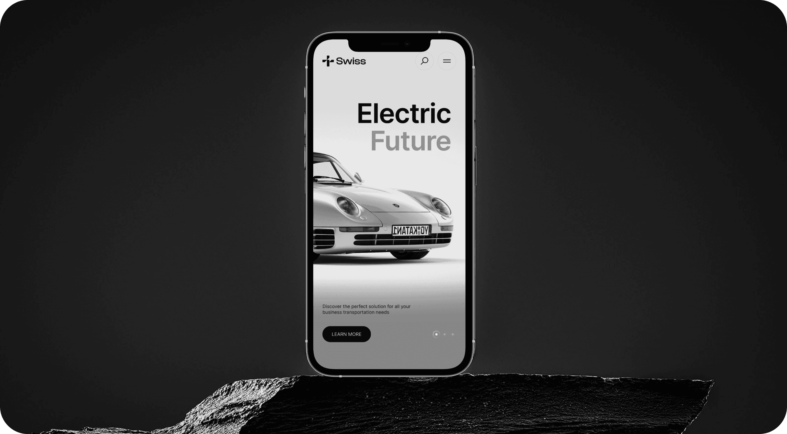
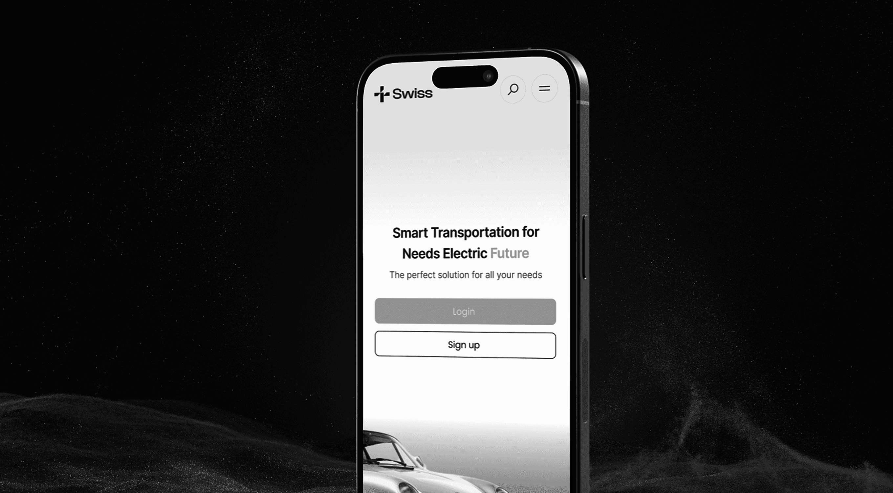

The News
A mobile app designed to help users get the stories that matter most.

Project Overview
This project centered on reinventing the brand’s digital identity across both web and mobile platforms. The goal was to create a cohesive, user-first experience that would elevate their online presence and support their growth across digital channels. Working closely with stakeholders, we defined key objectives around usability, aesthetics and performance. From the earliest wireframes to final delivery, every step was driven by strategy and storytelling. Our role was to bridge this gap by building a design system that seamlessly aligned with the brand voice while prioritizing usability. We began by conducting workshops and discovery sessions to align with stakeholder goals, define the user journey, and map key actions that drive conversions. This formed the backbone of our strategy moving forward.
In a fast-moving digital landscape, the brand approached us with a clear mission — to reimagine their presence across both web and mobile platforms in a way that not only captured their identity but also supported future scalability. Their existing digital experience was fragmented, slow, and lacked visual consistency, making it difficult to convert users or retain engagement.
Design & Frontend Approach
Once the strategy was locked in, we shifted into design and development. Our UX process began with low-fidelity wireframes and prototypes to map interaction, hierarchy and information flow. Once validated, we transitioned into high-fidelity UI design in Figma, crafting components that would later form the basis of a unified design system.
- Fully responsive UI
- Pixel-perfect frontend
- Scalable design system

Responsive Experience
Creating a responsive, device-agnostic interface was a central priority throughout the project. With users accessing the platform from a wide range of screen sizes — from desktop monitors to tablets and mobile phones — we adopted a mobile-first design philosophy. All components were developed with fluid grids, flexible containers, and dynamic breakpoints to ensure seamless rendering on every device. Extensive testing was done across modern browsers, OS types and real-world devices to validate the performance, layout integrity, and user experience. We also optimized page speed and UI responsiveness using techniques like lazy loading, minified assets and prefetching. The result: a smooth, accessible experience no matter how or where the user engages.